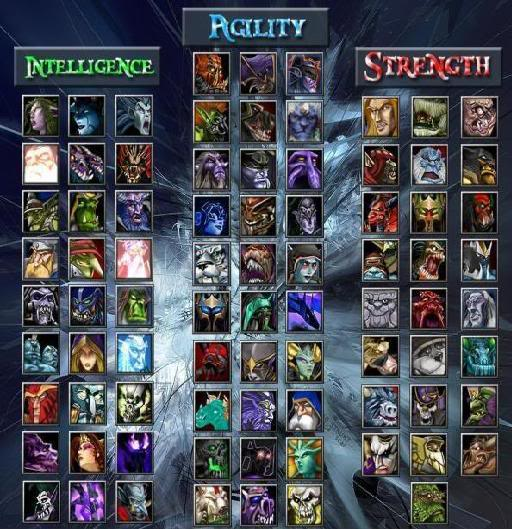
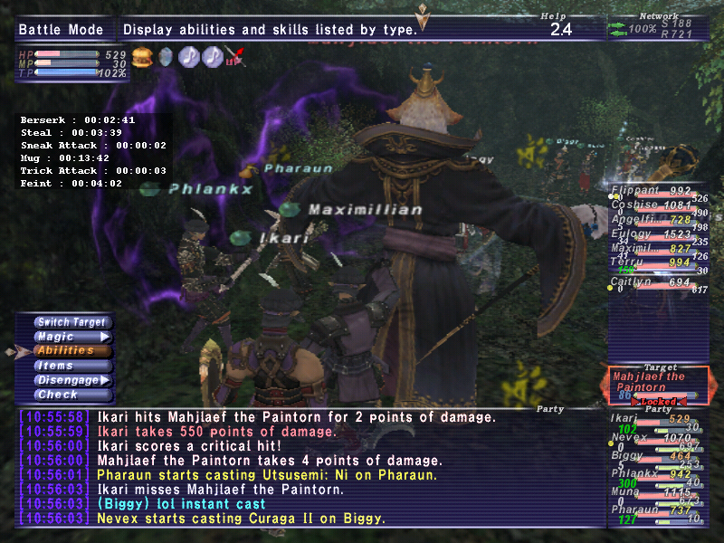

Recently, Avatars have become much more than just an image. With the conception of online virtual worlds and extremely popular M.M.O.R.P.G.’s avatars have become a representation of a user’s online identity.
Hero Creator Avatars represent a virtual body created by users to project their identity and actions into the world. These interactions are therefore based on a simulated face-to-face metaphor, with users “puppeteering” a virtual body to control fine-grained actions such as their gestures, posture, or eye gaze. But an avatar fulfills more than communication needs: it is also a visual representation of the user, a “tangible” embodiment of their identity. The choices users make when creating their avatar will have repercussions on their interactions with other users: selecting black hair, dark Victorian clothing and piercings is obviously making a different statement than opting for an athletic, tanned body in a swimsuit (these examples are far from extreme: the diversity of avatar choices in highly-customizable worlds like Second Life is truly amazing1.
Some people create avatars that are clones of themselves. However, with the ability to become anyone or anything online, many assume the roles of characters wildly different than themselves. There is no requirement of relation between their real world self and their online self. In this way avatars often act as alter-egos.
A NES controller for the disabled Avatars can offer escape. Jason Rhoads, a man with muscular dystrophy is essentially paralyzed but has movement in is thumb allowing him to play Star Wars Galaxies an upwards of 80 hours per week 4. With the help of his avatar, he has a new window to the world. He is no longer limited by his condition; he is able to walk around and interact with other users in a way not possible in the real world. He is treated as an equal among his peers online, everyone is on common ground.
Researchers have long been fascinated with the link between online identity and offline self. Early on, online spaces were described as “laboratories for the construction of identities” enabling users to experiment with various aspects of their personality. Recent work shows that users realize some aspects of their “ideal selves” through their avatar, which may have positive implications for those with low self-esteem. Research has also examined other issues related to identity and avatars, such as gender and ethnicity swapping1.
Second Life trailer Second Life is an online world. Users can create their own avatar, and can do essentially anything. Buildings, cars, land, hair, cloths, items, actions, animations, speech and everything else is created by the user. It has gained huge popularity since its release. Most interestingly, Second Life has no goal, it is not a game, it has no overall objective. It is simply an open ended world. However, there is no shortage of entertainment. Over 400 universities have begun holding classes online, IBM holds business meetings and there are some 40 virtual concerts per night 4. It is not just a creative title; people are actually beginning to replace their real lives with their ‘Second Lives.’ Many people are beginning to spend more time online than off. Their second life is their primary interest, and is then reflected in their real life.
The original intention of Second Life was to create a large space for people to come to meet up, share and create together. People have created everything from elaborate versions of themselves to, houses, dance clubs, venues and hotels. Everything in Second life is built by users online in their space. Users are free to live, act, and do whatever they wish. Through this freedom, users are able to express themselves online in an infinite amount of ways. Researchers believe that Second Life has begun to mirror real life so accurately that they can use the lives of online avatars to study the real lives of humans.
 DOTA avatar selection When I was younger, I played a lot of Warcraft III online. Warcraft III offered many different types of game such as “Heaven and Hell” or my favorite “DOTA”. When I would play DOTA after I got home from school, I was put into a team with several different players. Even though I enjoyed playing the game, I wasn’t very good and would often be ridiculed by my teammates for making them lose and called names such as “noob”. One day after I lost the game again for my team, someone from my team contacted me in the ending server and started a private room with me. He started this room to give me tips on how to improve my skills in the game and which items would attach best to certain avatars. After he explained some of the basic rules of the game I began an off-topic conversation about some recent movies that had come out. This conversation then trailed off into other various topics. Through these conversations we found out that we had a lot in common and agreed to meet up in a server when we would get out of school and play DOTA together.
I became better at the game with the help of my friend and private chat. After meeting up in servers and discussing television shows and interests, I began asking more personal questions such as where he was from. I then found out that the player was from the same town as me. He also happened to be in the same grade. I then asked him if he would like to hang out in person one day, which he agreed to. We met up on the weekend and hung out most of the day talking about videogames and television shows. We continued to hang out almost every weekend after that. To this very day we hang out or keep in touch whenever we can and I consider him one of my best friends today.
A few years back my brother began playing “Final Fantasy XI” online. He used to exercise and work out regularly before he started playing FFXI but once he go into the game he put on weight and slowly became out of shape. He would put aside time his friends just so he could meet up with some people he met online and go on quests together. He would lock himself in his room gaming all day and the only time my family would see him was in the morning before he would leave for school and at dinner. A month into playing the game he met a girl online and they thought they had a lot in common. This took up even more of his and he lost almost all of his friends because of his intense involvement with the virtual world. His grades began to drop and my parents lost touch with him even though he was living in the room down the hall from them.
 FFXI ingame With my brothers social life declining and his grades continuing to drop his only outlet for communications was his fellow gamers and his online girlfriend that he met through FFXI. About two after meeting this girl online and chatting for hours every night, she decided to lose contact with him. To this day he doesn’t know why but it caused him to slip into a depression. It took about a month for him to return to his “normal” self and start chatting up with people online again. Eventually he saw the light and stopped playing FFXI as much as he used to. This turn of events brought back his real life relationships with past friends that he hasn’t talked to since he got into the game. As he started drifting away from playing the game as much as he used to, his grades in school started to improve and he began exercising again. His online life took control over his real life, but he learned from this experience and won’t let it take control of him again.
Therapists have been encouraged to use online interactions to deal with their patients problems, how they act online can be used as a strong therapeutic tool. Virtual lives help kids, especially shy ones, to socialize with their peers. It also allows friends to meet up online when an in-person meeting is out of the question. Kids can have similar interaction represented through their avatars in a virtual world.
Research has argued that social interaction is a primary driving force for gamers to continue to play Massive Multiple Online Role Playing Games (MMORPGs). However, one recent study argues that gamers don’t really socialize with other players but play alone. Part of the confusion over whether players socialize much and/or enjoy socializing while playing MMORPGs may be due to the lack of a conceptual framework that adequately articulates what is meant by ‘social interaction in MMORPGs to understand how users experience interactions within the game 3.
Neglecting hygiene for games Online life is as diverse in relationships and psychology as in real life. For example, being married to one woman in real life, but another online will cause jealousy between the two. Online interaction does have a direct relation with our offline life. However, people may act differently because they can hide behind their avatar’s mask. On the other hand, excessive online socialization can diminish off line social skills. Some people feel that their online lives are even more important than their real lives. They may not vote or participate in real life community things because they feel that their real life isn't as important what they do online.
Users feel sorrow when their avatar is hurt, and joy when their avatar is successful. If a user’s avatar is killed, it has a strong effect on the user who owns it. Users establish an online identity through their avatars, essentially, they are linked to one another.
Avatars are extensions of ourselves. We express ourselves through avatars.
“We project ourselves into these creations of ours”4{kind=link}
{kind=link}
{kind=link}
{kind=link}